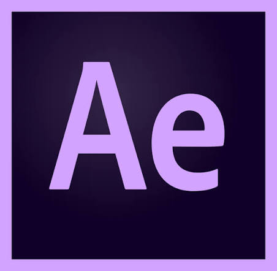

Rotoscoping
A frame-by-frame animation project produced by tracing over reference video footage, exploring motion, color, and the boundaries between live action and illustration.

After Effects CapCut
1080p
Rotoscoping
CapCut
1080p
Rotoscoping
ORIGINAL VIDEO
"RUDE!" — Hearts2Hearts (하트투하트)
DISCLAIMER: This rotoscoping project is intended for educational purposes only, showcasing technical animation and post-production skills. All rights and credits belong to the original owner(s). No copyright infringement intended.
BEFORE & AFTER
ORIGINAL REFERENCE
FINAL EDITED VIDEO
DUAL-SYNC PLAYBACK ENGINE
Frame-perfect synchronization locking the original reference and final composite together.
TECHNICAL ARSENAL
AFTER EFFECTS
Primary engine for masking, interpolation, and advanced subject isolation using the Roto Brush and Pen toolsets.
CAPCUT
Optimized for final assembly, mobile-ready formatting, and seamless social media delivery.
STEP-BY-STEP

FIND REFERENCE VIDEO
Source and select the original footage that will serve as the foundation for your rotoscoping project.

EDIT IN CAPCUT
Trim and cut your reference video into manageable 5-second clips for easier rotoscoping.

ROTOSCOPE IN AFTER EFFECTS
Use Adobe After Effects and the Roto Brush tool to create frame-by-frame masks and isolate your subject.

RENDER EACH CLIP
Export each rotoscoped clip from After Effects in your desired resolution and format.

COMBINE ALL CLIPS
Import all rendered clips and assemble them in sequence to form your complete rotoscoped animation.

FINAL EDIT IN CAPCUT
Polish your final video in CapCut with transitions, effects, and any additional edits for the final output.